Import statements:
import pandas as pd
import numpy as np
from sklearn import preprocessing
import matplotlib.pyplot as plt
plt.rc('font', size=14)
from sklearn.linear_model import LogisticRegression
from sklearn.model_selection import train_test_split
import seaborn as sns
sns.set(style='white')
sns.set(style='whitegrid', color_codes=True)
Reading in the dataset:
data = pd.read_csv('enterprise.csv')
data.head()
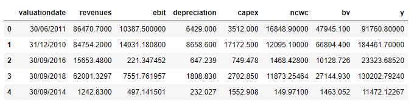
Checking the datatypes and null values:
data.info()
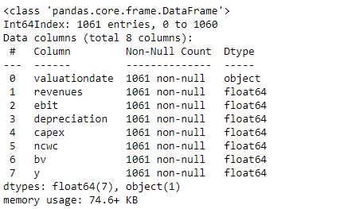
Summary statistics:
data.describe()
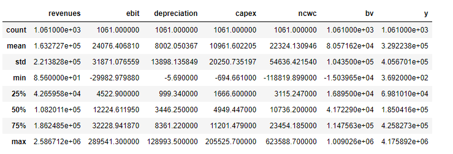
Variable correlations:
data.corr()
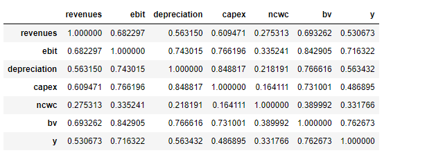
sns.heatmap(data.corr(),annot=True)
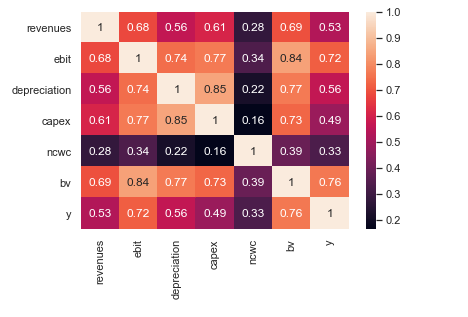
Frequency Histograms for each column:
%matplotlib inline
data.hist(bins=50, figsize=(20,15))
plt.show()
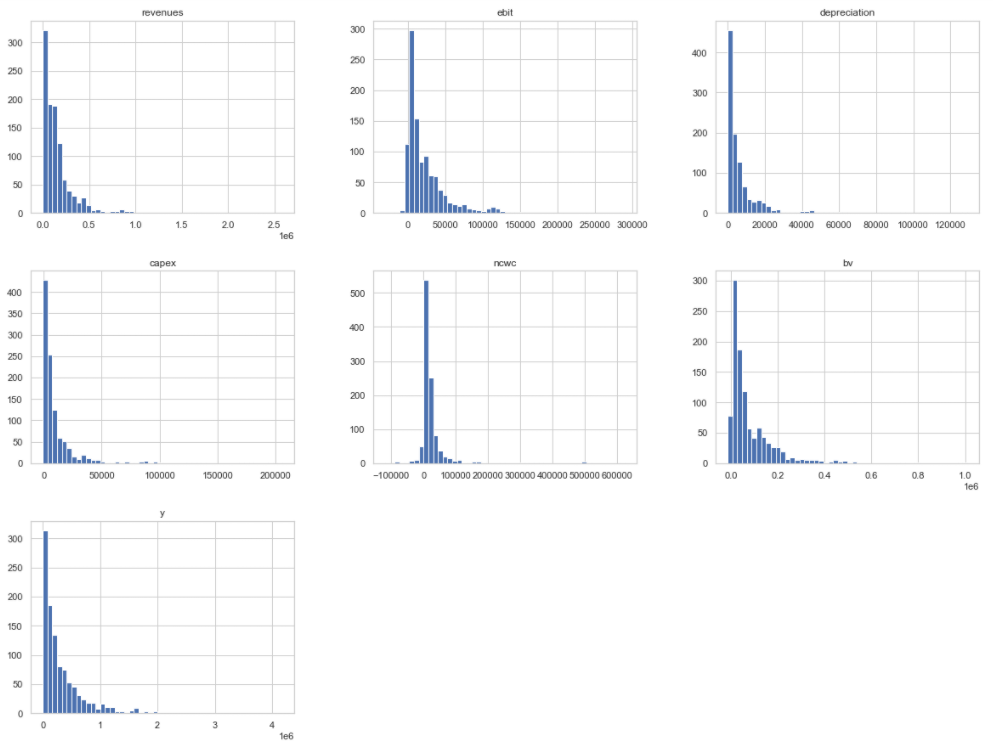
Correlation Scatterplots:
sns.pairplot(data)
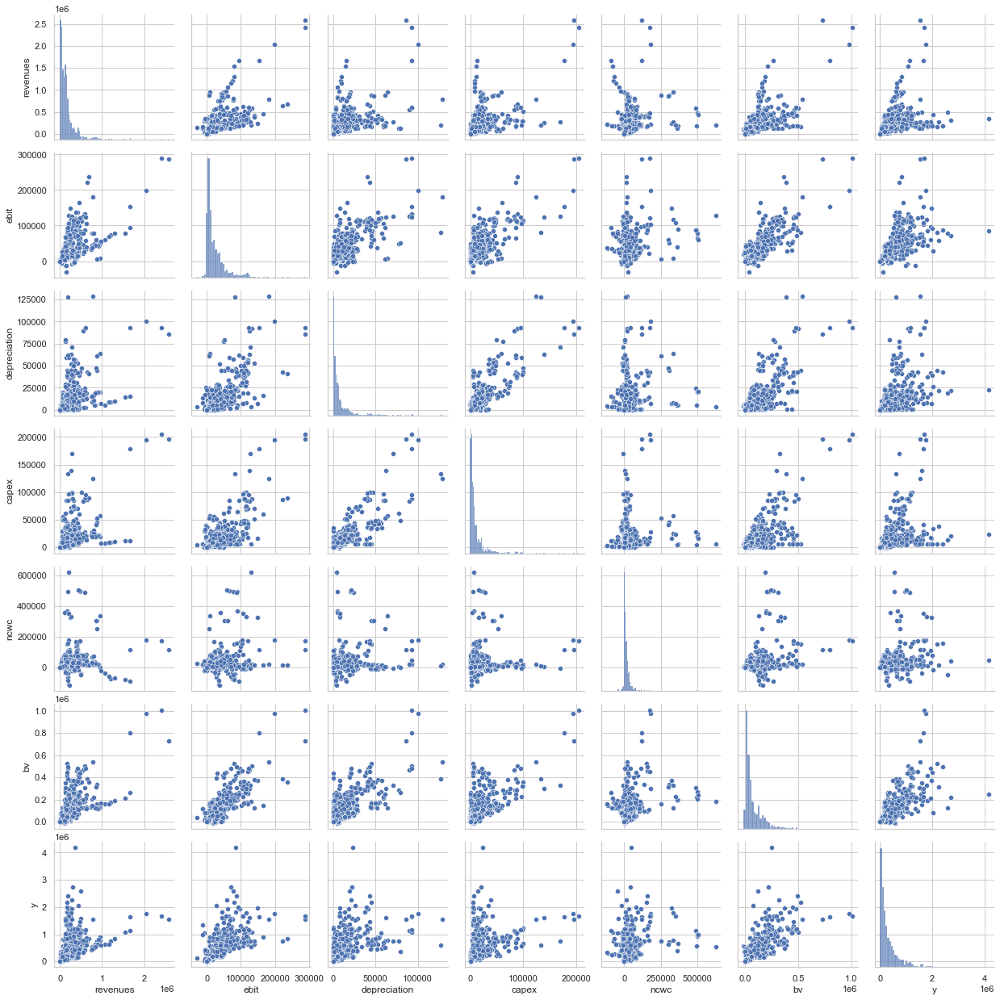
Area plots for the frequency of each column:
sns.set(style='dark')
sns.set(style='darkgrid', color_codes=True)
plt.rcParams["figure.figsize"] = (8,4)
data.revenues.plot.area(color='tab:blue',stacked=None)
plt.title('Histogram of Revenues')
plt.xlabel('Revenues')
plt.ylabel('Frequency')
data.depreciation.plot.area(color='tab:green',stacked=None)
plt.title('Histogram of Depreciation')
plt.xlabel('Depreciation')
plt.ylabel('Frequency')
data.ebit.plot.area(color='tab:orange',stacked=None)
plt.title('Histogram of EBIT')
plt.xlabel('EBIT')
plt.ylabel('Frequency')
data.capex.plot.area(color='tab:red',stacked=None)
plt.title('Histogram of CAPEX')
plt.xlabel('CAPEX')
plt.ylabel('Frequency')
data.ncwc.plot.area(color='tab:pink',stacked=None)
plt.title('Histogram of Non-Cash WC')
plt.xlabel('Non-Cash WC')
plt.ylabel('Frequency')
data.bv.plot.area(color='tab:gray',stacked=None)
plt.title('Histogram of BV')
plt.xlabel('BV')
plt.ylabel('Frequency')
data.y.plot.area(color='blue',stacked=None)
plt.title('Histogram of EV')
plt.xlabel('EV')
plt.ylabel('Frequency')
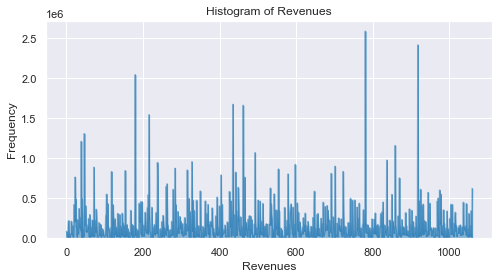
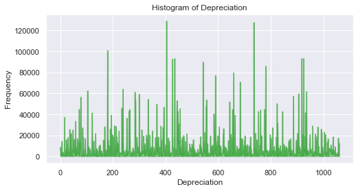
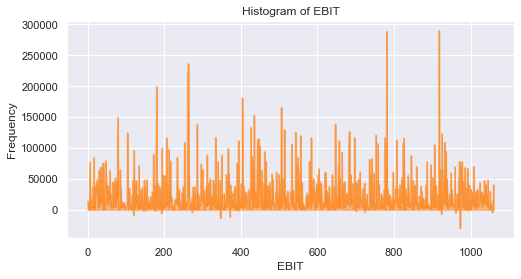
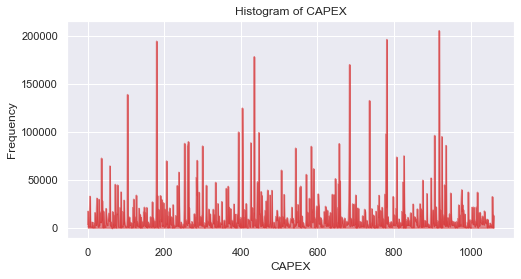
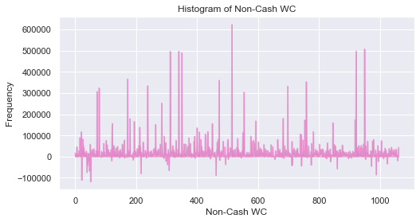
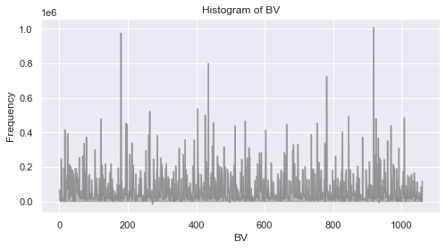
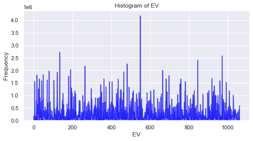